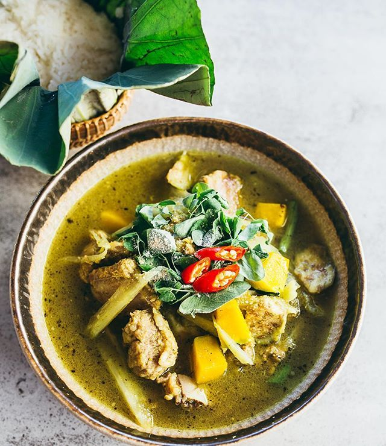
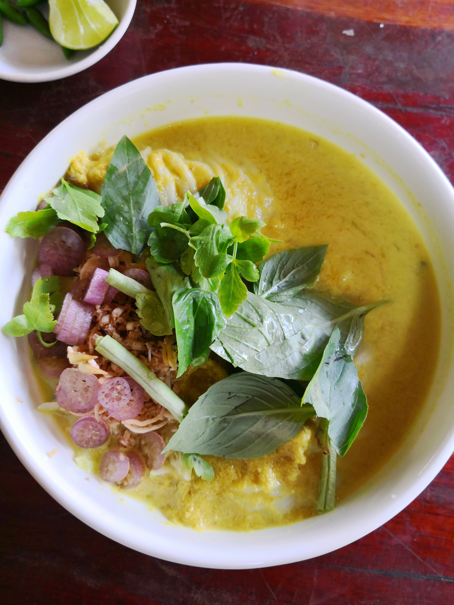

Rice is the staple grain, as in other Southeast Asian countries. Fish from the Mekong and Tonlé Sap rivers is also an important part of the diet. The supply of fish and fish products for food and trade as of 2000 was 20 kilograms (44 pounds) per person or 2 ounces per day per person.[243] Some of the fish can be made into prahok for longer storage. The cuisine of Cambodia contains tropical fruits, soups and noodles. Key ingredients are kaffir lime, lemon grass, garlic, fish sauce, soy sauce, tamarind, ginger, oyster sauce, coconut milk and black pepper. >   Some delicacies are num banhchok (នំបញ្ចុក), fish amok (អាម៉ុកត្រី) and aping (អាពីង). The country also boasts various distinct local street foods. French influence on Cambodian cuisine includes the Cambodian red curry with toasted baguette bread. The toasted baguette pieces are dipped in the curry and eaten. Cambodian red curry is also eaten with rice and rice vermicelli noodles. Probably the most popular dine out dish, kuyteav, is a pork broth rice noodle soup with fried garlic, scallions, green onions that may also contain various toppings such as beef balls, shrimp, pork liver or lettuce. Kampot pepper is reputed to be the best in the world and accompanies crab at the Kep crab shacks and squid in the restaurants on the Ou Trojak Jet river.